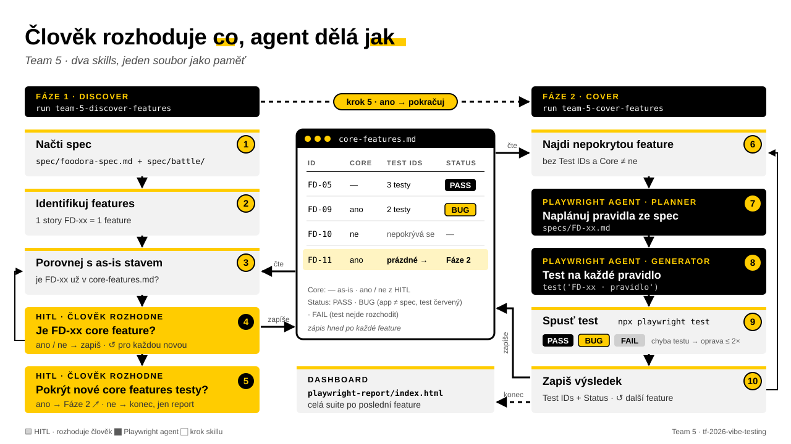

Spec se změnila.
Kdo ví, co teď
není otestované?
Team 5 · Vibe Testing Lab / Tesena Fest 2026
Team 5 · Vibe Testing Lab / Tesena Fest 2026
| FD-09 | ? |
| FD-10 | ? |
| FD-11 | ? |
Tři věci, které jsme dnes viděli v Zoo
Ne to, co je pro byznys core. Všechny features dostanou stejnou péči.
Expected vezme z app, ne ze spec. Test projde i na chybě.
Po změně spec nikdo neví, která feature nemá test.

Cold run: jeden prompt run team-5-discover-features, zbytek jsou jen kliky ano / ne.
Funguje na jakoukoliv app se spec.